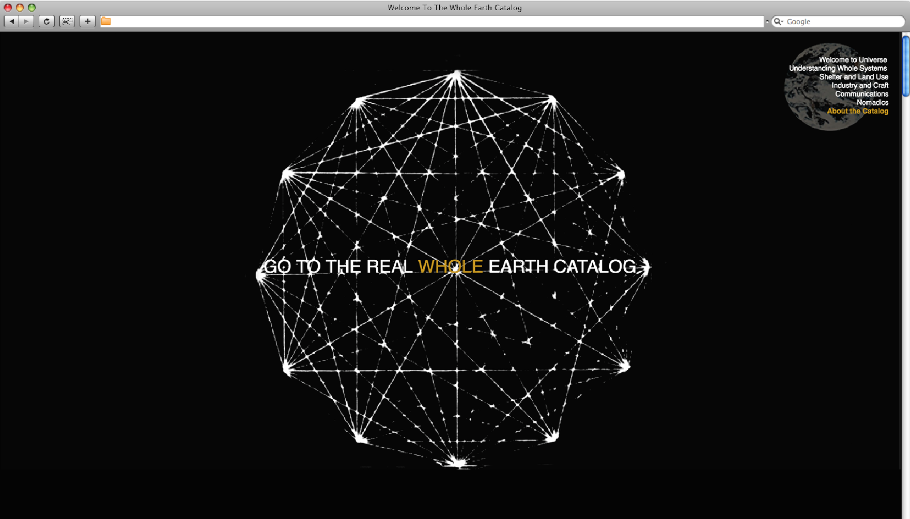
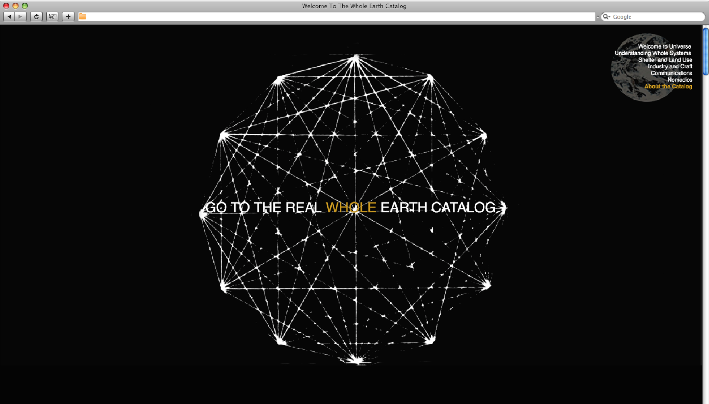

I discovered the existence of the WEC thanks to Fred Turner's preface "Aux sources de l'Utopie Numérique".
The Whole Earth Catalog represents for me the meeting between the reveries of the hippie communities and those of scientists.
Steward Brand, the creator of the catalog, is a hippie who contributed to the advance of the digital revolution. He will try to remedy the problems of the nomadic and scientific communities by facilitating the circulation, the exchange between the two worlds.
And that's what I liked. The effervescence around this sharing.
That is why I decided to bring the catalog to a new medium: that of the Internet, to deploy it on the web, in order to make it known.
 
